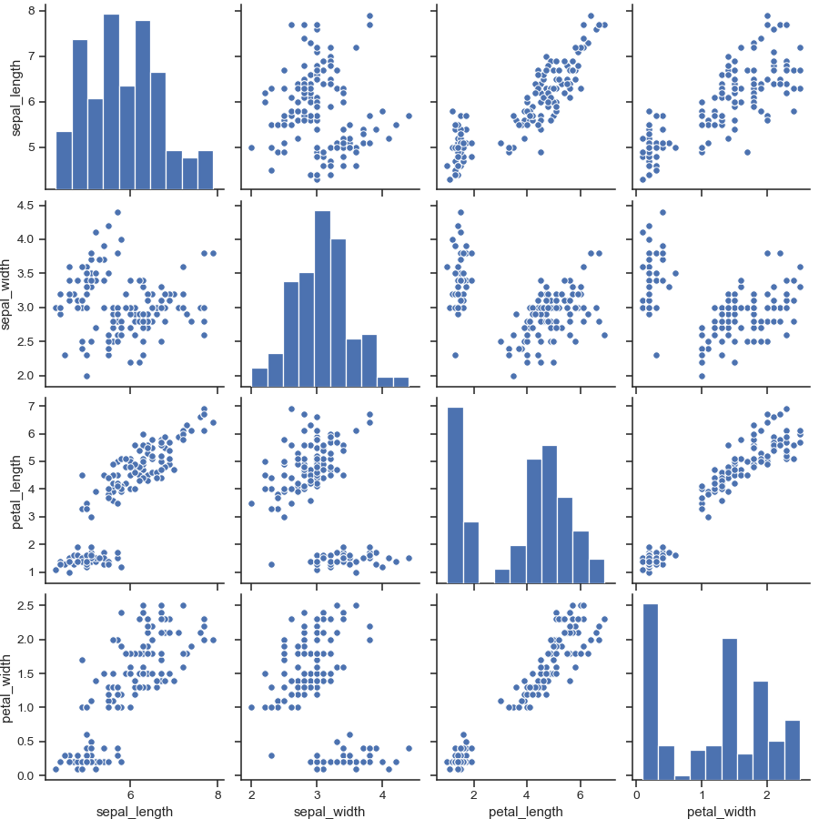
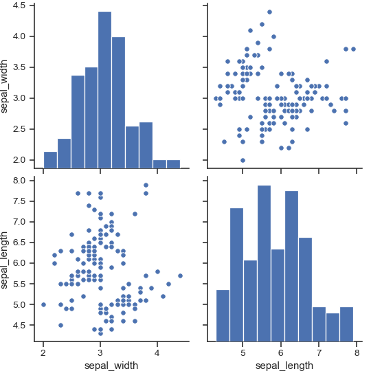

seaborn.pairplot¶
-
seaborn.pairplot(data, hue=None, hue_order=None, palette=None, vars=None, x_vars=None, y_vars=None, kind='scatter', diag_kind='auto', markers=None, height=2.5, aspect=1, corner=False, dropna=True, plot_kws=None, diag_kws=None, grid_kws=None, size=None)¶ Plot pairwise relationships in a dataset.
By default, this function will create a grid of Axes such that each numeric variable in
datawill by shared in the y-axis across a single row and in the x-axis across a single column. The diagonal Axes are treated differently, drawing a plot to show the univariate distribution of the data for the variable in that column.It is also possible to show a subset of variables or plot different variables on the rows and columns.
This is a high-level interface for
PairGridthat is intended to make it easy to draw a few common styles. You should usePairGriddirectly if you need more flexibility.- Parameters
- dataDataFrame
Tidy (long-form) dataframe where each column is a variable and each row is an observation.
- huestring (variable name), optional
Variable in
datato map plot aspects to different colors.- hue_orderlist of strings
Order for the levels of the hue variable in the palette
- palettedict or seaborn color palette
Set of colors for mapping the
huevariable. If a dict, keys should be values in thehuevariable.- varslist of variable names, optional
Variables within
datato use, otherwise use every column with a numeric datatype.- {x, y}_varslists of variable names, optional
Variables within
datato use separately for the rows and columns of the figure; i.e. to make a non-square plot.- kind{‘scatter’, ‘reg’}, optional
Kind of plot for the non-identity relationships.
- diag_kind{‘auto’, ‘hist’, ‘kde’, None}, optional
Kind of plot for the diagonal subplots. The default depends on whether
"hue"is used or not.- markerssingle matplotlib marker code or list, optional
Either the marker to use for all datapoints or a list of markers with a length the same as the number of levels in the hue variable so that differently colored points will also have different scatterplot markers.
- heightscalar, optional
Height (in inches) of each facet.
- aspectscalar, optional
Aspect * height gives the width (in inches) of each facet.
- cornerbool, optional
If True, don’t add axes to the upper (off-diagonal) triangle of the grid, making this a “corner” plot.
- dropnaboolean, optional
Drop missing values from the data before plotting.
- {plot, diag, grid}_kwsdicts, optional
Dictionaries of keyword arguments.
plot_kwsare passed to the bivariate plotting function,diag_kwsare passed to the univariate plotting function, andgrid_kwsare passed to thePairGridconstructor.
- Returns
See also
PairGridSubplot grid for more flexible plotting of pairwise relationships.
Examples
Draw scatterplots for joint relationships and histograms for univariate distributions:
>>> import seaborn as sns; sns.set(style="ticks", color_codes=True) >>> iris = sns.load_dataset("iris") >>> g = sns.pairplot(iris)
Show different levels of a categorical variable by the color of plot elements:
>>> g = sns.pairplot(iris, hue="species")

Use a different color palette:
>>> g = sns.pairplot(iris, hue="species", palette="husl")

Use different markers for each level of the hue variable:
>>> g = sns.pairplot(iris, hue="species", markers=["o", "s", "D"])

Plot a subset of variables:
>>> g = sns.pairplot(iris, vars=["sepal_width", "sepal_length"])

Draw larger plots:
>>> g = sns.pairplot(iris, height=3, ... vars=["sepal_width", "sepal_length"])
Plot different variables in the rows and columns:
>>> g = sns.pairplot(iris, ... x_vars=["sepal_width", "sepal_length"], ... y_vars=["petal_width", "petal_length"])

Plot only the lower triangle of bivariate axes:
>>> g = sns.pairplot(iris, corner=True)

Use kernel density estimates for univariate plots:
>>> g = sns.pairplot(iris, diag_kind="kde")

Fit linear regression models to the scatter plots:
>>> g = sns.pairplot(iris, kind="reg")

Pass keyword arguments down to the underlying functions (it may be easier to use
PairGriddirectly):>>> g = sns.pairplot(iris, diag_kind="kde", markers="+", ... plot_kws=dict(s=50, edgecolor="b", linewidth=1), ... diag_kws=dict(shade=True))